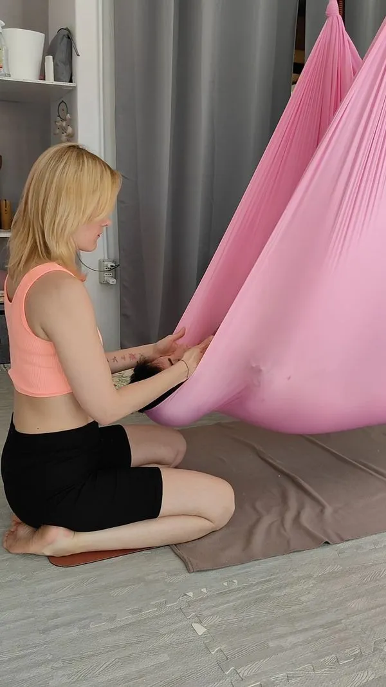
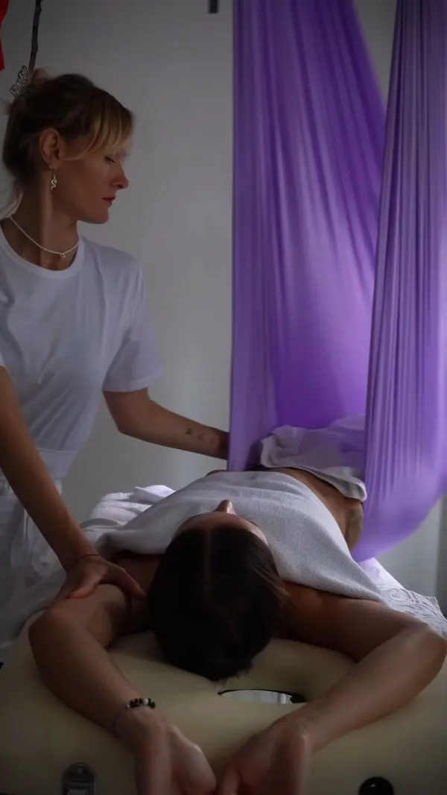
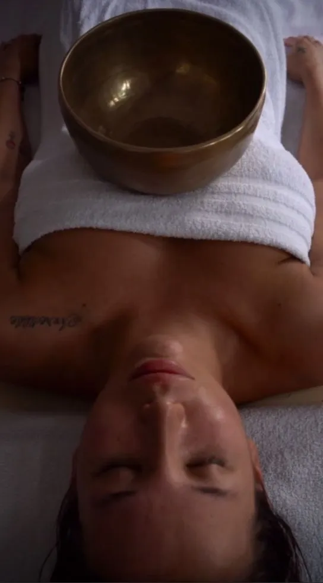
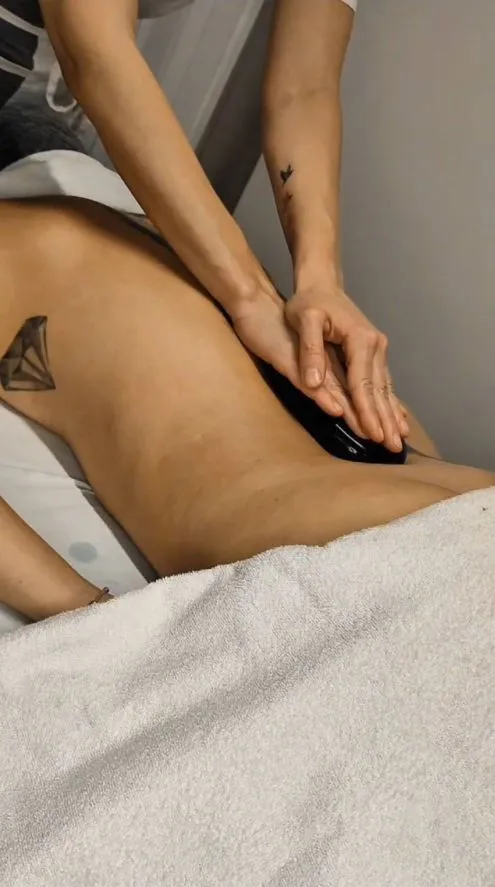

Massaggi Trieste
Il tuo punto di riferimento per il Massaggi Trieste: Relax, Cura e Benessere
I Migliori Massaggi Trieste per il Tuo Equilibrio
Il nostro studio offre una gamma completa e raffinata di massaggi Trieste, studiati per ristabilire l'equilibrio psicofisico profondo. Sappiamo quanto sia importante concedersi un momento di pausa nella frenesia quotidiana. Se stai cercando un massaggio Trieste professionale, eseguito con competenza, sensibilità e passione, sei arrivato nel posto giusto.
Ogni trattamento è un'esperienza unica, personalizzata in base alle tue necessità del momento. Che tu abbia bisogno di sciogliere tensioni muscolari, drenare liquidi in eccesso o semplicemente staccare la spina, abbiamo il massaggio trieste perfetto per te.
- 🌸 Massaggio Olistico: L'Armonia Totale
Considerato il re dei trattamenti benessere, questo massaggio Trieste considera la persona nella sua interezza: mente, corpo e spirito. Non lavora solo sui muscoli, ma anche sulle energie sottili. Attraverso manovre fluide, avvolgenti e ritmiche, scioglie i blocchi energetici ed emotivi, donando una profonda sensazione di pace interiore e riconnessione con sé stessi. - ✨ Massaggio Modellante: Silhouette Definita
Vuoi ridefinire la tua silhouette e tonificare i tessuti? Il nostro massaggio modellante utilizza tecniche energiche, veloci e profonde per stimolare il metabolismo del tessuto adiposo e riattivare la circolazione. È uno dei massaggi Trieste più richiesti e apprezzati da chi desidera un corpo più sodo, compatto e vitale. - 💧 Tecniche Drenanti: Leggerezza Immediata
La soluzione ideale contro gonfiori, pesantezza e ritenzione idrica. Attraverso pressioni delicate, lente e ritmiche, stimoliamo il sistema linfatico per favorire l'eliminazione naturale delle tossine e dei liquidi in eccesso. Un vero tocco di leggerezza per le tue gambe e per tutto l'organismo. - 😌 Antistress (Massaggi Rilassanti): Pace per la Mente
Lascia fuori dalla porta le preoccupazioni, l'ansia e lo stress quotidiano. Questo massaggio utilizza movimenti lenti, lunghi e profondi per calmare il sistema nervoso, abbassare i livelli di cortisolo e migliorare significativamente la qualità del sonno. È senza dubbio il miglior massaggio Trieste per chi ha bisogno di staccare la spina e rigenerarsi completamente. - 🧘♀️ Massaggio Articolare: Libertà di Movimento
Dedicato a chi sente rigidità, blocchi o limitazioni nei movimenti. Attraverso mobilizzazioni passive, trazioni dolci e stretching assistito, questo trattamento migliora la flessibilità, l'elasticità e l'ampiezza di movimento delle articolazioni, restituendo scioltezza e libertà al corpo. - 👣 Riflessologia Plantare: Il Benessere dai Piedi
Un'antica arte di guarigione che passa attraverso i piedi, specchio del nostro corpo. Stimolando punti specifici (punti riflessi) sulla pianta del piede, andiamo ad agire di riflesso sugli organi interni e sui sistemi corporei, promuovendo l'equilibrio e l'autoguarigione dell'intero organismo. - 🔥 Massaggio con Pietre Calde (Hot Stone): Calore Curativo
Un rituale avvolgente e primordiale dove il calore delle pietre vulcaniche levigate penetra in profondità nei muscoli. Il calore scioglie le contratture più ostinate, migliora la circolazione e induce uno stato di rilassamento meditativo assoluto. Un'esperienza sensoriale indimenticabile tra i nostri massaggi trieste.
🕊 Esclusivo: Fly Massage - Unico a Trieste
Massaggio in Amaca (Fly Massage)
Siamo orgogliosi di essere gli unici a proporre questo innovativo e straordinario massaggio Trieste. Cullati dalla morbida amaca del Fly Yoga, riceverete un trattamento in completa sospensione.
L'assenza di gravità permette un rilassamento muscolare immediato e profondo, impossibile da ottenere sul lettino tradizionale. Il dolce dondolio riporta a sensazioni ancestrali di sicurezza, protezione e pace (simili al grembo materno). È un'esperienza sensoriale completa che unisce i benefici del massaggio manuale alla decompressione vertebrale passiva. Se cerchi qualcosa di veramente speciale tra i massaggi Trieste, il Fly Massage è da provare assolutamente.




Domande Frequenti sui Massaggi a Trieste
Il massaggio olistico considera la persona nella sua interezza con manovre fluide che sciolgono blocchi energetici ed emotivi. Il massaggio decontratturante è più profondo e mirato, specifico per contratture muscolari localizzate. Entrambi disponibili nel nostro studio massaggi a Trieste.
Il Fly Massage è un trattamento esclusivo in completa sospensione sull'amaca del Fly Yoga. L'assenza di gravità permette un rilassamento muscolare immediato e profondo impossibile sul lettino tradizionale. Il dolce dondolio induce uno stato di pace totale. Siamo gli unici a Trieste ad offrire questo trattamento.
I massaggi standard durano solitamente 50–60 minuti. Il Fly Massage e i trattamenti combinati possono durare fino a 90 minuti. Contattaci via WhatsApp per definire il trattamento e la durata più adatti alle tue esigenze.
Sì. Il massaggio decontratturante, articolare e il Fly Massage (con decompressione vertebrale passiva in amaca) sono particolarmente indicati per mal di schiena, cervicale e tensioni muscolari. Ogni trattamento viene adattato alla situazione specifica del cliente.
Puoi prenotare il tuo massaggio a Trieste via WhatsApp al +39 351 857 3757 oppure su Instagram @antigravita_flyyoga. I massaggi sono su appuntamento, con orari flessibili dal lunedì al sabato.
Completa il tuo percorso di benessere: